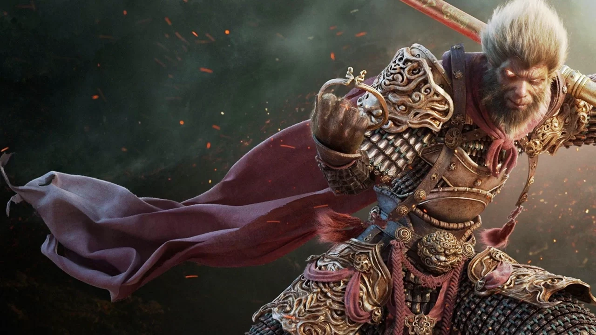

História
Sun Wukong nasceu de uma rocha mística formada pelas forças primitivas do caos, localizada na Montanha das Flores e Frutas (transliterado para o inglês como hua guo shan). Após se juntar a um clã de macacos, ele ganhou o respeito dos animais ao descobrir a Caverna da Cortina de Água (shui lian dong) atrás de uma grande cachoeira; o clã fez do local o seu novo lar. Os outros macacos honraram o descobridor e o tornaram rei deles, dando-lhe o título de Měi Hóuwáng (Rei Macaco Bonitão). Mesmo tendo se tornado o mais poderoso da sua espécie, o Rei continuava um mortal. Determinado a encontrar a imortalidade, o rei viajou até a civilização, onde encontrou e se tornou discípulo do patriarca budista-taoísta Bodhi. Ele aprendeu a língua dos homens e muitas formas de viajar.[2] Bodhi estava relutante em tomar esse novo discípulo que não era humano; mas a tenacidade do Rei Macaco impressionou o patriarca. Nesse momento o animal ganhou o nome de Sun Wukong ("Sun" que aludia a sua origem símia, e "Wukong" que significa alerta do nada). Mais tarde, quando a disposição e a inteligência o tornaram o discípulo favorito do patriarca, Sun aprendeu e foi treinado em várias artes mágicas. Ele recebeu o poder das "72 transformações", podendo mudar sua forma para qualquer pessoa ou objeto. Ele aprendeu a viajar por entre as nuvens, incluindo a técnica chamada de Jīndǒuyún (cambalhota sobre as nuvens), que o fazia cobrir 54.000 km com um único pulo. Finalmente, ele passou a ser capaz de transformar cada um dos 84 000 pêlos do seu corpo em objetos e pessoas, até mesmo duplicatas de si próprio. Sun Wukong sentia-se orgulhoso de seus novos poderes e começou a vangloriar-se junto aos outros discípulos, o que desagradou o patriarca. Bodhi pediu a Sun que fosse embora do templo e antes que partisse, ordenou-lhe que não contasse a ninguém como ganhara seus poderes.[2] De volta a Montanha das Flores e Frutas, Sun Wukong se transformaria num dos mais poderosos e influentes demônios do mundo. Ao procurar uma arma digna de sua pessoa, Sun Wukong mergulhou pelos oceanos e pegou o cajado dourado Ruyi Jingu Bang. O objeto fora usado originariamente por Dà-Yǔ para medir a profundidade dos oceanos e depois se tornou o "Pilar pacificador dos mares", um tesouro de Ao Guang, o "Rei Dragão dos Mares Orientais". Pesava 8,1 toneladas e mudava de tamanho bem como podia se multiplar, dependendo dos desejos de seu mestre em uma luta. Quando Sun Wukong se aproximou, o pilar brilhou, indicando que o objeto encontrara seu verdadeiro mestre. Sun Wukong podia carregá-lo sempre consigo e o encolhia ao tamanho de uma agulha e escondia dentro da orelha quando precisava. Os seres marinhos ficaram temerosos com a falta do pilar que controlava as marés e as ondas. Na ofensiva para tomar o pilar, Sun também derrotara os dragões dos quatro mares e os forçara a lhes darem as melhores partes de suas armaduras mágicas, uma cota de malha dourada, uma capa com penas da Fênix (鎖子黃金甲) e botas saltadoras de nuvens(藕絲步雲履 Ǒusībùyúnlǚ). Sun Wukong então desafiou as divindades do Inferno que tentavam tomar sua alma. Ordenado a reencarnar como todos os seres vivos, Sun não só se negou a isso como apagou seu nome do "Livro da Vida e Morte" e de todos os macacos que conhecia. O Rei Dragão e os Cavaleiros do Inferno decidiram pedir a ajuda do Imperador de Jade do Paraíso.[2]